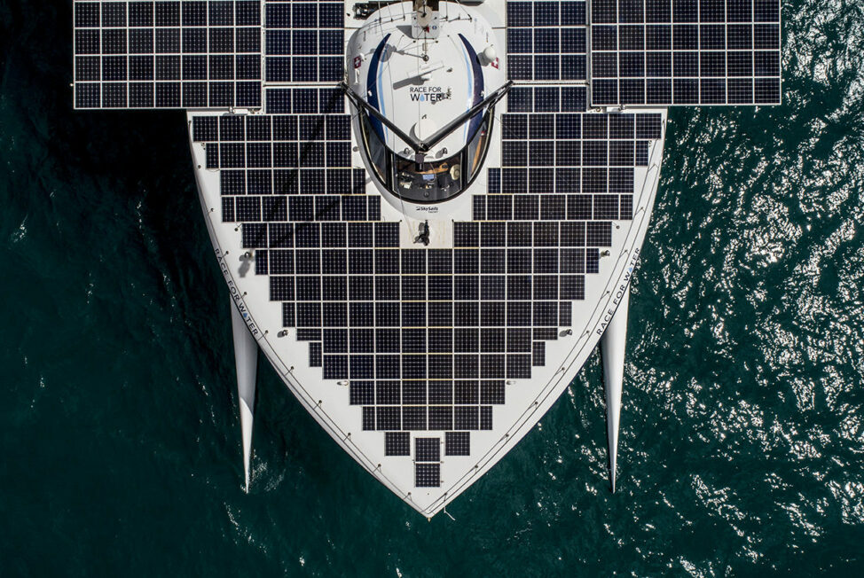

Bienvenue
Projet nuit de l'info de l'équipe les séquestrés pour Race for Water. En cliquant sur le bouton "Jouer", vous accédez à plein de mini-jeux sur le thème du corps et de l'océan.
Qu'est-ce que Race For Water ?
Race for Water est une fondation suisse dédiée à la protection des océans contre la pollution plastique. Elle utilise un bateau innovant alimenté par des énergies renouvelables (solaire, éolienne et hydrogène) pour sensibiliser le public et promouvoir des solutions durables. Son objectif est de préserver les ressources en eau et de lutter contre les déchets marins.
Plus de détails
Race for Water, une fondation suisse dédiée à la préservation des océans, mène des initiatives pour lutter contre la pollution plastique et le changement climatique. Depuis 12 ans, elle déploie ses programmes "LEARN, SHARE, ACT" à bord de navires révolutionnaires zéro émission. Ces expéditions combinent missions scientifiques, sensibilisation du public et promotion d'innovations écologiques.
En 2025, la nouvelle odyssée avec le MODX 70, un catamaran de pointe, ciblera la décarbonation du transport maritime et la préservation des océans en Méditerranée.
Grâce à 2 précédentes expéditions mondiales, la fondation a mené des enquêtes, sensibilisé des milliers de personnes et collaboré avec des décideurs pour réduire les déchets plastiques et leurs impacts. Les océans, essentiels à la vie, sont au cœur de leur mission pour garantir un futur durable face aux défis climatiques et environnementaux.
Chiffres clés :
- 2 expéditions mondiales.
- 40 escales dans 25 pays.
- Plus de 16 000 personnes sensibilisées.
Ensemble, protégeons les océans !